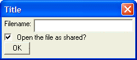

Check Box Controls
To create a check box control on a dialog use the '(' and ')' delimiters. The syntax for a check box object is:
(variable_name) |
It is good practice (but not strictly necessary) to declare variable_name as a logical variable before displaying the dialog box.
The following script displays a dialog with a check box control:
Dim sharedfile as L sharedfile =.t. result = ui_dlg_box("Title",<<%dlg% Filename: [.32filename]; (sharedfile) Open the file as shared?; %dlg% ) |
This script creates this dialog:

Lesson 2: Check Box Control
Next
See Also
Limitations
Desktop applications only.